30 September 2026 · Actual application captures from the graph interaction redesign.
Work is paused at the user’s request. These are intermediate, individually verified UI states. Broad live topology editing, song-level modulation and strict 60 fps qualification remain incomplete.
Stopping-point report · Detailed chronological evidence
Selected channel and searchable effect insertion.
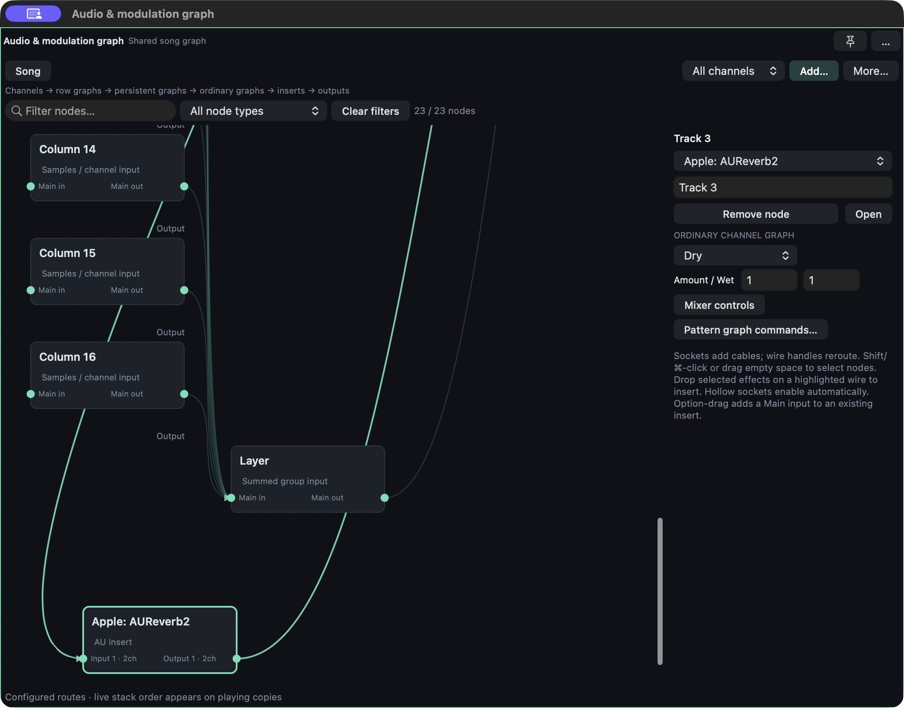
after/01-add-effect.png
Main audio and detector sockets are separate.
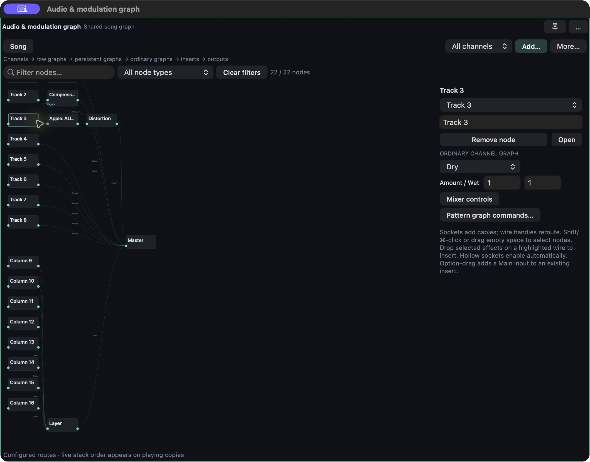
after/03-sidechain.png
Row, persistent, ordinary and instrument copies remain identifiable.
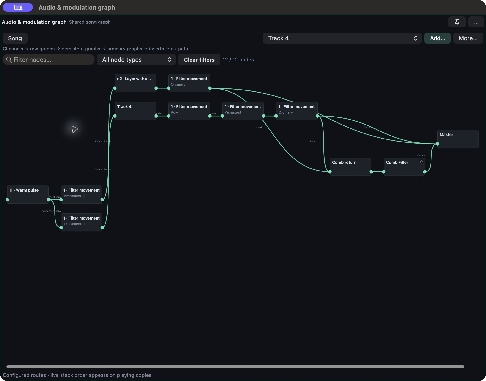
after/26-dense-instance-roles.png
Package selected rack processors, name in place, retain live audio.
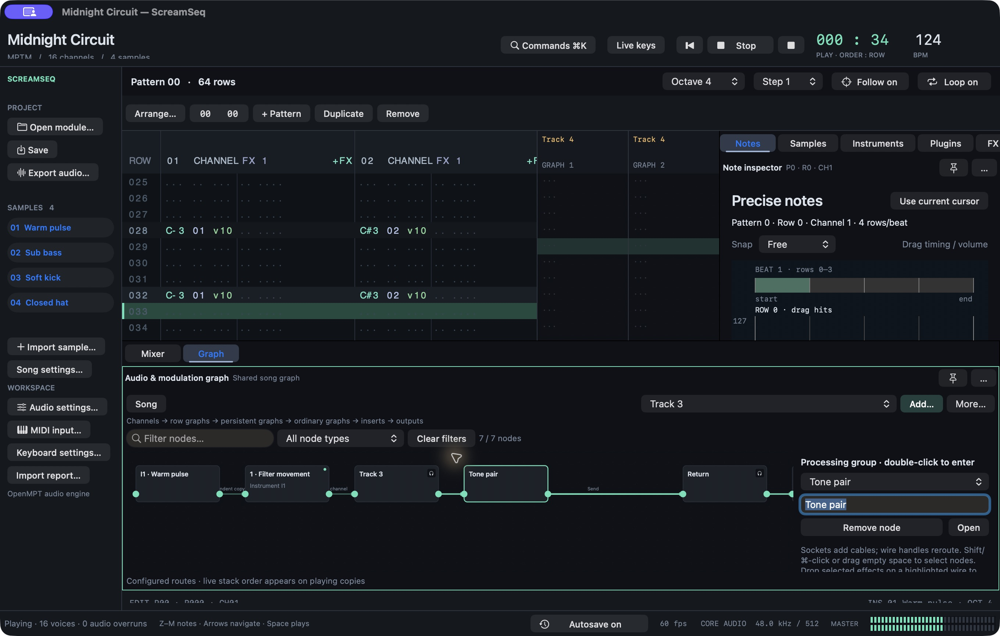
after/44-song-group-direct-name.png
Meters and the temporary listening tap resolve to real ports.
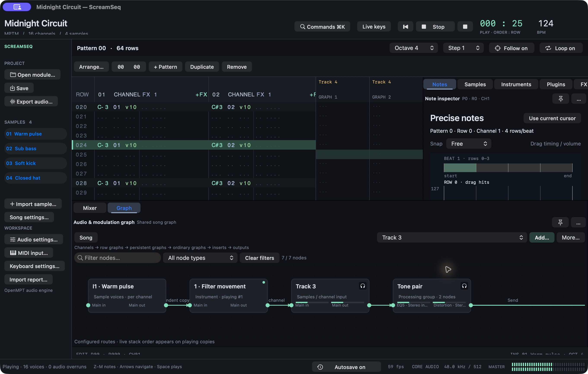
after/46-group-meters.png
Requested host-port capture during playback.
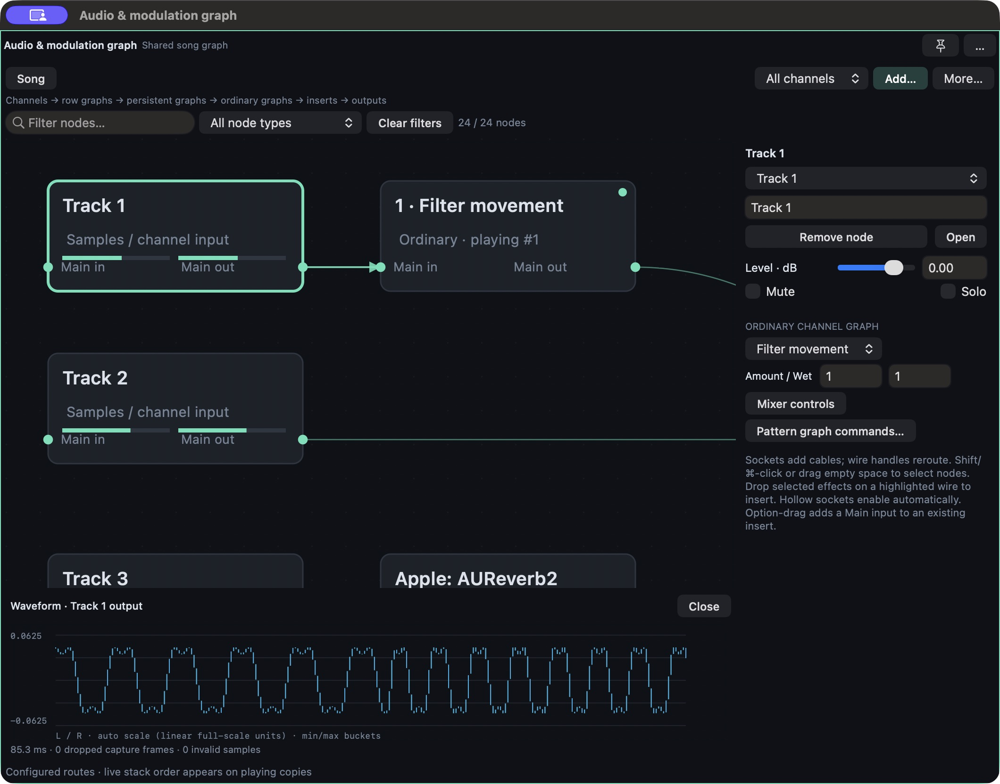
after/14-live-waveform-scaled.png
Off-audio-thread FFT of captured host audio.
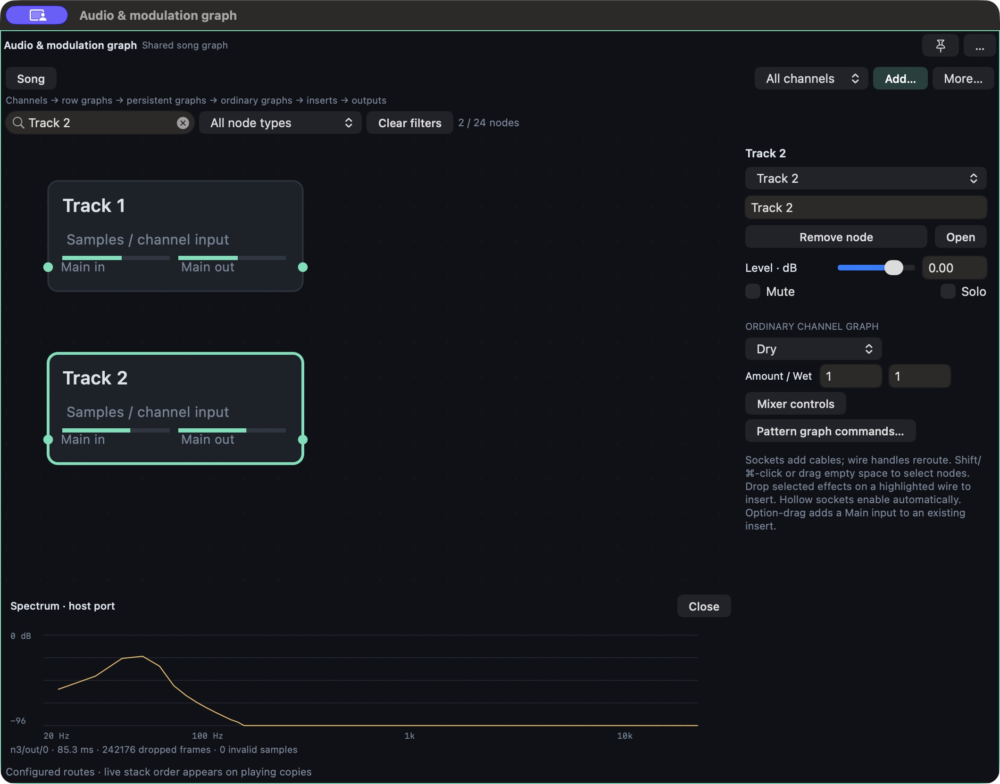
after/13-live-spectrum.png
Search and drag shared recipe parameters in context.
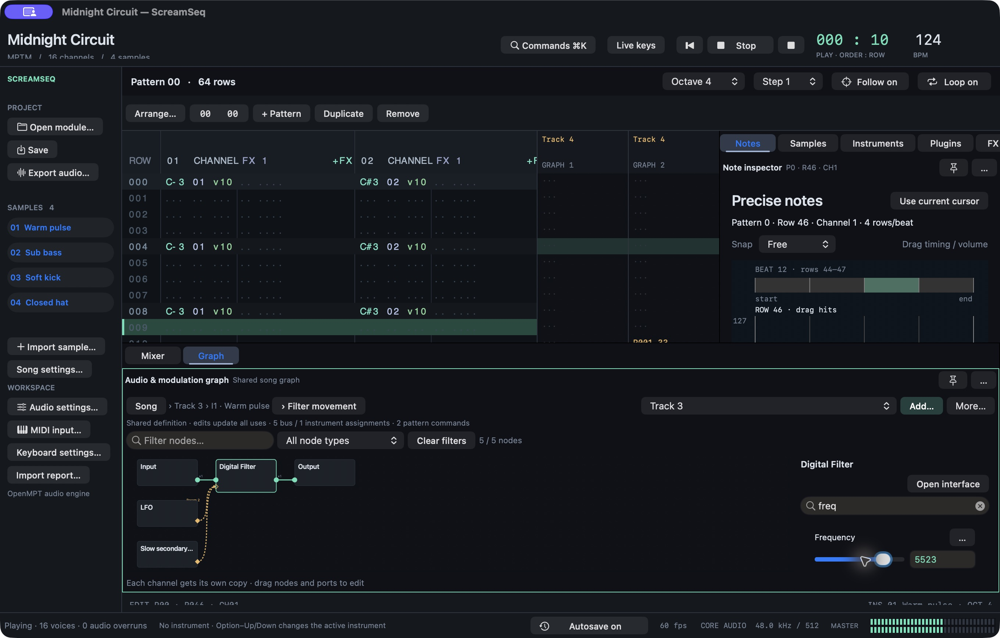
after/48-instrument-direct-parameter.png
Verified subset: downstream route changes with unchanged processor dependencies.
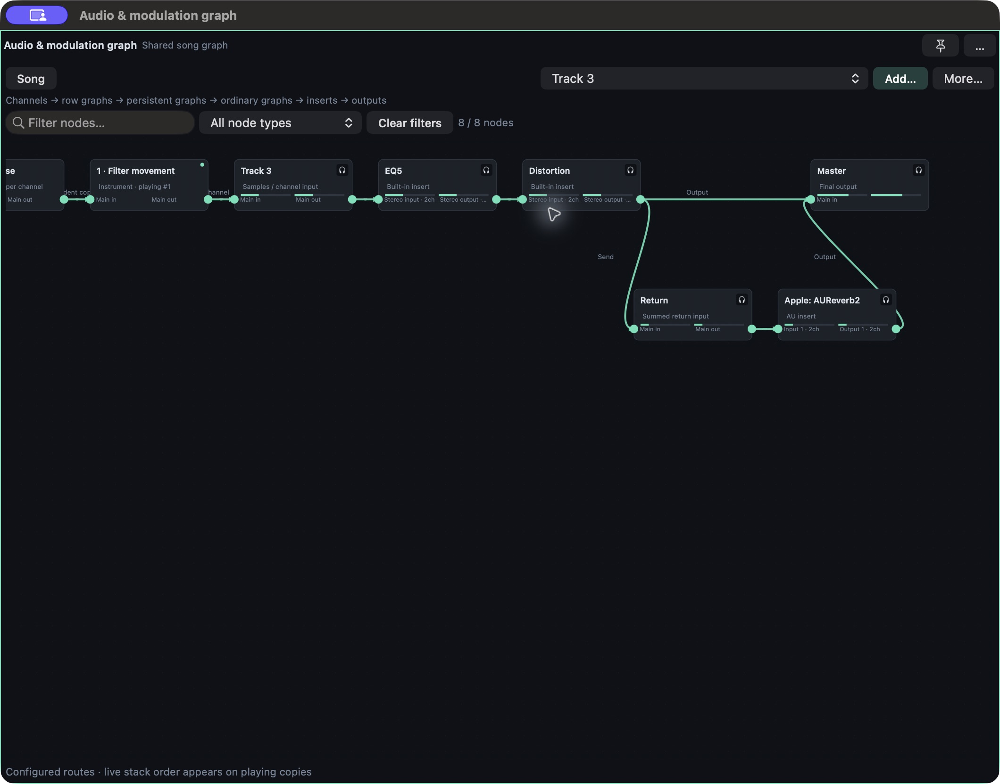
after/50-live-main-route.png
Socket-to-empty creation with zero depth, then amount drag.
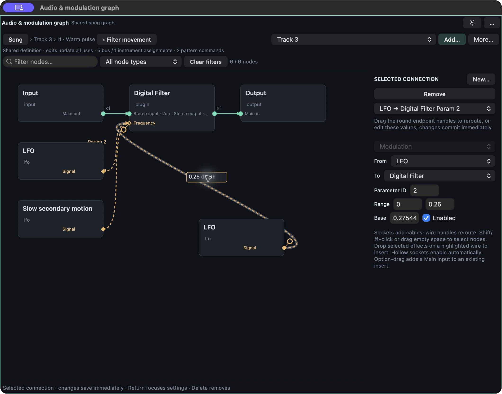
after/52-modulation-depth-drag.png
Point and numeric edits commit without an Apply button.
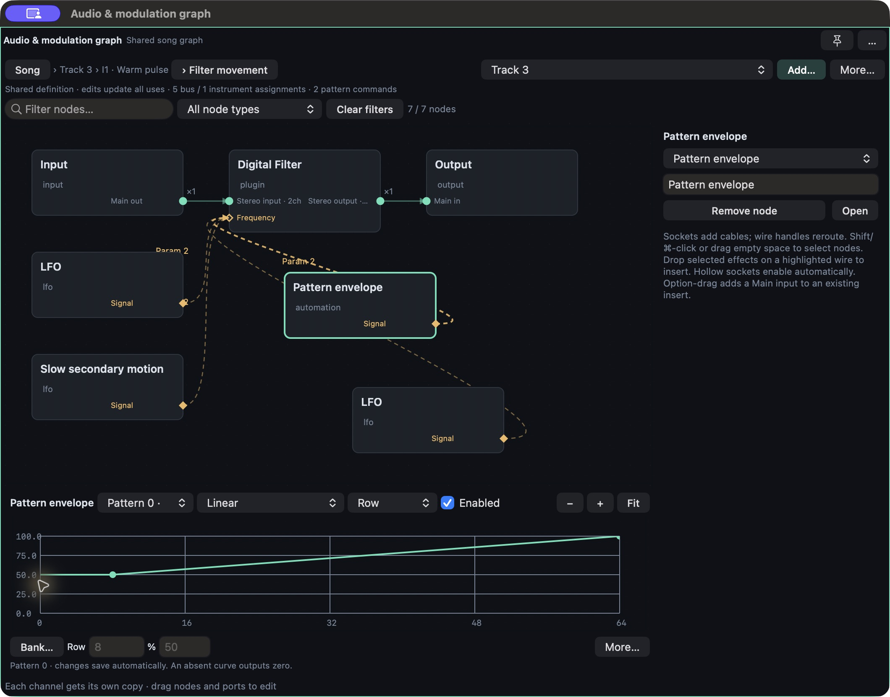
after/54-automatic-graph-envelope.png
Selected amount badge avoids cards; exact numeric focus is preserved.
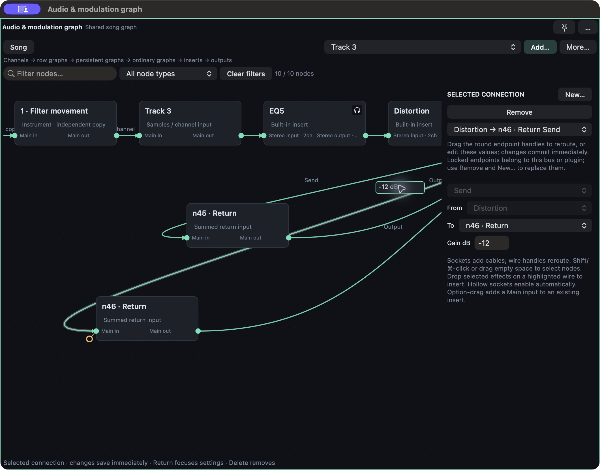
after/55-visible-send-amount.png